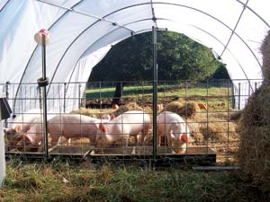

What passes for pork in the supermarket these days leaves much - besides taste - to be desired. What is a “ham and water-added product,” anyway?
That’s why we added pigs to the product lineup on our small farm in southeastern Pennsylvania in 2006. We sell pork, by the whole or half hog, to the growing number of people who are fed up with supermarket pork.
We call it “pigloo pork” because the pigs are sheltered in plastic “igloos” - simple, inexpensive hoop-style greenhouse structures diverted from our vegetable operation. Pigloo pork, our marketing brochure explains, is simply the best, humanely raised pork available anywhere - without the added food miles and wasteful packaging of gourmet companies that ship such meat around the country.
According to research by Iowa State University (ISU), pigs raised inside a “hoop structure” such as our pigloos, are, in a word, happier than pigs raised in confinement on bare, slatted concrete floors over manure pits. Pigs raised in pigloos on deep, soft bedding had far fewer and shorter fights than confinement hogs. There was almost no tail-biting, but there was a lot more “play behavior.”
“Play,” observed the ISU researchers, “is considered a luxury to be performed only when other behavioral needs have been met. Therefore, the expression of play behavior is indicative of good welfare. We judge the welfare of [pigloo] raised pigs to be richer than that of non-bedded confinement-raised pigs.” Our pigs love to play! They play ball, tag, ring-around-the-piggie and hide-and-seek with us and each other in their straw bedding.
Most pigs today eat an unnatural diet of mainly corn. But our pigs spend their days browsing grass pasture in the fresh air and sunshine. They eat our overripe or blemished vegetables. Last fall, they “pigged out” on trailer loads of damaged or blemished pumpkins grown by a neighbor, plus the apples from shade-giving trees in their pasture. We also feed them a supplemental ration containing certified organic ground corn, wheat, oats and roasted soybeans. The grain is grown and ground by a nearby “plain” farmer. He fortifies the feed with dashes of fish meal, vitamins, minerals and Lactobacillus.
People who previously bought half a hog or split a half with a friend bought a whole hog the next time. The only snag last year was rising grain prices caused by the ethanol boom. We increased our price by a dollar a pound, and still sold out.
“I was going to buy no matter what the price, and I wouldn’t have noticed that the price had increased if you hadn’t mentioned it,” said one of our customers.
|
 GEORGE DEVAULT Pigs raised with access to sunshine and pasture are healthier and produce tastier meat. |
|
|